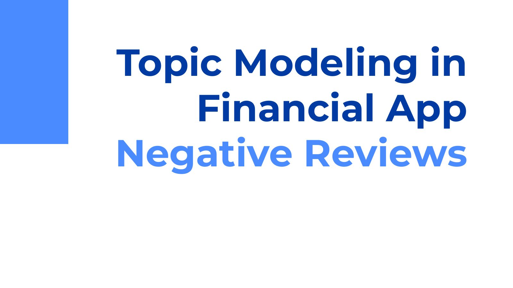

TLDR
- The question
- How can NLP identify UX pain points in trading apps from negative App Store reviews, and do those pain points differ across a traditional broker, a commission-free app, a crypto exchange, and a newer entrant?
- What we did
- Scraped 1,000 reviews per app, scored sentiment with VADER, then ran TF-IDF and LDA topic modeling on the negative reviews to surface each app's top problems.
- What we found
- The biggest complaints were about money and access (withdrawals, account locks, verification, slow support), not interface layout. And star ratings were a poor stand-in for sentiment: people often wrote complaints and still left high ratings.
The deck
Our final presentation. Use the arrows (or your keyboard's arrow keys) to click through, or jump to any slide from the strip below.

Pain points by app
| App | Top pain points | Recommendation |
|---|---|---|
| Fidelity | Account setup and verification, slow trades and fund movement | Simplify onboarding and streamline buy/sell flows |
| Robinhood | Withdrawal delays, unresolved support issues, distrust in trading fairness | Fix withdrawals and rebuild trust with transparency |
| Coinbase | Slow customer support, locked accounts, unclear fees | Faster support, simpler account recovery, upfront fees |
| Moomoo | Confusing interface and onboarding for new traders | Improve onboarding and UI, speed up transfers |
What I took from it
- Star ratings aren't sentiment. A classifier predicting stars from review text barely beat baseline outside of 1- and 5-star reviews. Review text tells you far more than the number.
- Validate against ground truth, not a proxy. We tuned sentiment thresholds to match star ratings after showing ratings were unreliable. Next time I'd hand-label a sample of reviews and use that instead.
- Reviews show severity, not prevalence. People who write reviews skew toward strong complaints, so this method is good for finding serious failures, not for estimating how common they are.
Read the full paper
PDF · 24 pages · or download the slides (PDF)
Graduate coursework project. Analysis based on publicly posted App Store reviews; no reviewer identities are reproduced here. Recommendations are inferences from public review text and are not affiliated with or endorsed by any of the companies named.